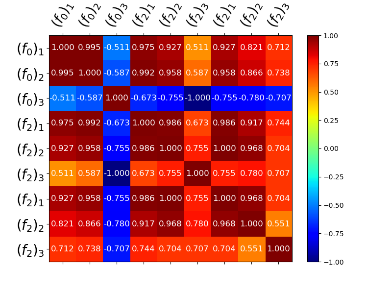
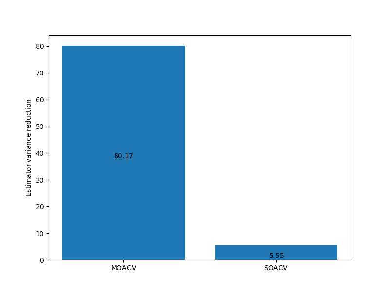

Note
Go to the end to download the full example code
Multioutput Approximate Control Variates
This tutorial demonstrates how computing statistics for multiple outputs simultaneoulsy can improve the accuracy of ACV estimates of individual statistics when compared to ACV applied to each output separately.
The optimal control variate weights are obtained by minimizing the estimator covariance [RM1985].
import numpy as np
import matplotlib.pyplot as plt
from pyapprox import multifidelity as mf
from pyapprox.benchmarks import setup_benchmark
from pyapprox.util.visualization import mathrm_labels, mathrm_label
np.random.seed(1)
benchmark = setup_benchmark("multioutput_model_ensemble")
costs = np.array([1, 0.01, 0.001])
nmodels = 3
cov = benchmark.covariance
labels = ([r"$(f_{0})_{%d}$" % (ii+1) for ii in range(benchmark.nqoi)] +
[r"$(f_{2})_{%d}$" % (ii+1) for ii in range(benchmark.nqoi)] +
[r"$(f_{2})_{%d}$" % (ii+1) for ii in range(benchmark.nqoi)])
ax = plt.subplots(1, 1, figsize=(8, 6))[1]
_ = mf.plot_correlation_matrix(
mf.get_correlation_from_covariance(cov), ax=ax, model_names=labels,
label_fontsize=20)
target_cost = 10
stat = mf.multioutput_stats["mean"](benchmark.nqoi)
stat.set_pilot_quantities(cov)
est = mf.get_estimator("gmf", stat, costs)
est.allocate_samples(target_cost)
# get covariance of just first qoi
qoi_idx = [0]
cov_0 = stat.get_pilot_quantities_subset(
nmodels, benchmark.nqoi, [0, 1, 2], qoi_idx)[0]
stat_0 = mf.multioutput_stats["mean"](benchmark.nqoi)
stat_0.set_pilot_quantities(cov_0)
est_0 = mf.get_estimator("gmf", stat_0, costs)
est_0.allocate_samples(target_cost)
est_labels = mathrm_labels(["MOACV", "SOACV"])
# only works if qoi_idx = [0]
from pyapprox.multifidelity.factory import ComparisonCriteria
class CustomComparisionCriteria(ComparisonCriteria):
def __call__(self, est_covariance, est):
return est_covariance[0, 0]
ax = plt.subplots(1, 1, figsize=(8, 6))[1]
_ = mf.plot_estimator_variance_reductions(
[est, est_0], est_labels, ax, criteria=CustomComparisionCriteria())
- 
- 
Video
Click on the image below to view a video tutorial on multi-output approximate control variate Monte Carlo quadrature
References
Total running time of the script: ( 0 minutes 0.252 seconds)